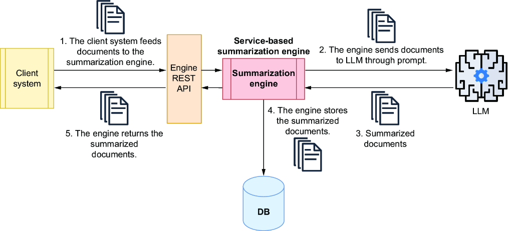
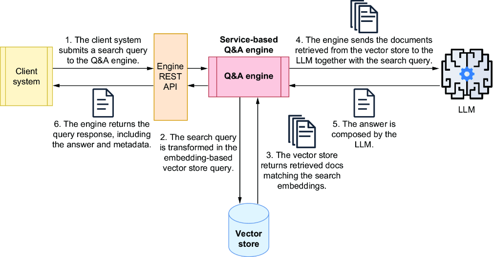
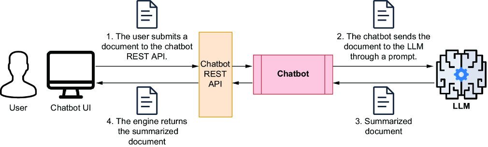
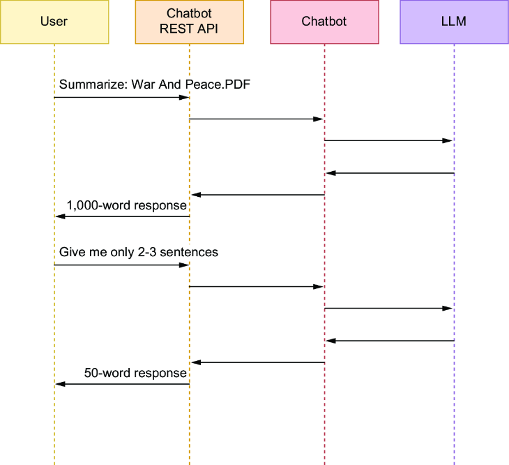
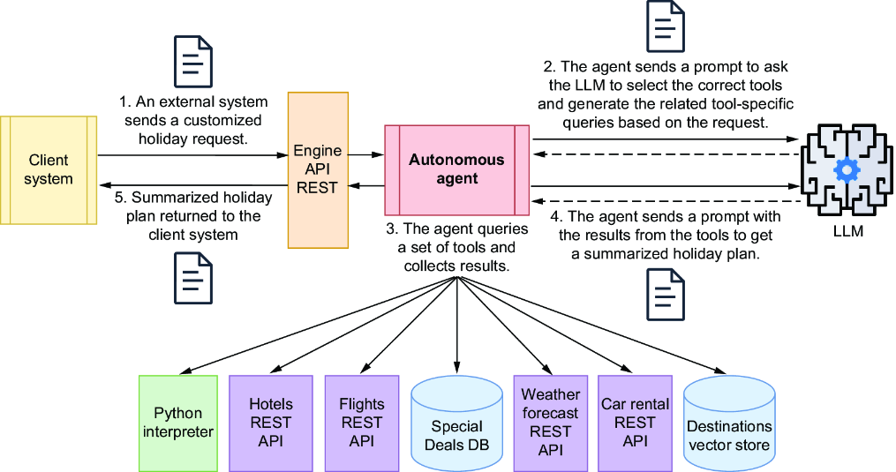

1. Introduction
1.1 LLM Applications, Chatbots, and AI Agents
LLMs work well with natural language: they understand text, generate it, and extract useful information. This enables many applications, including summarization, translation, sentiment analysis, semantic search, chatbots, and code generation. For this reason, LLM systems are now used in sectors such as education, healthcare, law, and finance.
Even with different use cases, most LLM systems follow a similar flow: natural-language input, unstructured data processing, context retrieval, and prompt construction for model execution. In practice, these systems are grouped into three categories.
LLM-based applications, or engines, provide a bounded capability such as summarization, search, or generation. They produce an output and stop, without choosing autonomous follow-up actions.
Chatbots are conversational interfaces that keep context across turns. Their focus is dialogue and interactive Q&A.
AI agents are autonomous or semi-autonomous systems that plan and execute multi-step work toward a goal. Unlike engines, they can loop (observe -> decide -> act -> observe), use tools and APIs, and adapt based on intermediate outcomes.
1.2 LLM-based Applications
1.2.1 Summarization and Q&A engines
An LLM-based application is a backend component for specific language tasks. A summarization engine, for example, condenses long text into concise output that can be returned immediately or stored for reuse.

Summarization engines are often exposed as shared API services so multiple systems can call them on demand. Another common pattern is the Q&A engine, which answers queries against a domain knowledge base through two phases: ingestion and query.
In ingestion, the engine collects documents, splits them into chunks, converts chunks into embeddings, and stores text plus vectors in a vector store. In query, it embeds the user question, retrieves relevant chunks, and builds a prompt with question and context before calling the LLM.
This design is Retrieval-Augmented Generation (RAG), where generation is grounded by retrieved context at runtime.

Engines are not limited to Q&A. They can run predefined chains with API calls, data retrieval, and post-processing. The key property remains the same: a bounded, goal-specific workflow with logic defined before runtime.
1.2.2 LLM-based chatbots
An LLM-based chatbot acts as an interactive assistant that supports continuous, natural conversation with the model. Unlike simple one-shot scripts, chatbots are designed to keep exchanges useful, safe, and consistent through explicit prompt instructions and role-based messages.
To improve factual quality, chatbots often retrieve context from local knowledge sources such as vector stores. This combination of dialogue and retrieval helps produce answers that are not only fluent, but also more relevant to the domain.
A key capability is conversation memory: by using previous turns, the chatbot can keep answers coherent and personalized. Because memory is constrained by context limits and cost, many systems summarize or compress chat history during longer interactions.
Chatbots are often specialized for tasks such as summarization, Q&A, and translation. The main difference from engines is interactivity: users can refine outputs step by step, and the system adapts responses through iterative dialogue.


1.2.3 AI agents
An AI agent is a system that uses an LLM to execute multi-step tasks with branching logic and adaptive decisions. Unlike fixed pipelines, agents operate with controlled autonomy: they follow constraints, but they decide what to do next at runtime.
At each step, the agent asks the model to select tools, executes those tools, evaluates intermediate results, and continues until a stopping condition is reached. This loop lets agents combine structured and unstructured data sources in a single workflow.
A typical pattern is goal-oriented orchestration: the agent receives a user request, chooses relevant services, runs queries or API calls, and then composes a final response from the collected outputs.

In production settings, this loop may run for multiple iterations and often includes human approval for high-stakes actions. Agent architectures can also vary, including supervisor patterns that coordinate more specialized sub-agents.
Learning outcomes
- Explain the core concepts and design choices for this module.
- Implement a working example with LangChain or LangGraph.
- Evaluate output quality and identify iteration points.
Topics
LLM fundamentals, prompt templates, chain composition, output parsing, and runtime controls.
Guided lab
Execution steps
Build a mini assistant that classifies user intent and routes to different prompt templates with deterministic settings.
Exercises
Practice tasks
Run three prompt variants over the same input set and compare factuality, verbosity, and consistency.
Deliverable
Submission output
A repository containing one runnable chain, test prompts, and a short design note describing model and prompt decisions.
Key takeaways
- A clear implementation path from concept to runnable artifact.
- A repeatable structure for quality checks and improvements.
- An incremental bridge to the next module.